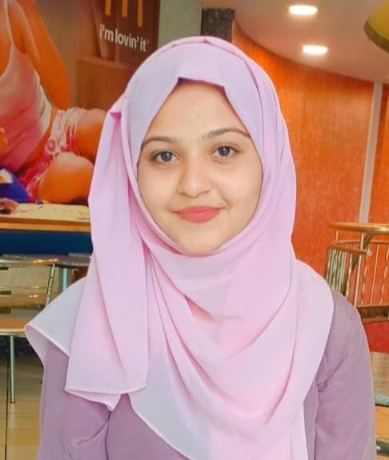

Mirza Kanza Fathima

Contact details
Phone number: +971 503947203
Email id: mirzakanzafathima@gmail.com
location: Dubai, UAE
Summary
I intend to be a part of an organization
where I can constantly learn and develop
my technical and management skills and
make best use of it for the growth of an
organization. Immediate Joiner.
Education
- BE in Computer Science Engineering (2019-2023)
- From Visvesvaraya Technological University(VTU).
- 12th standard PCMB (2018-2019)
- From Jyoti Nivas PU College.
Work Experience
Dxc Technologies
Analyst (2024- 2025)
- System Analysis & Requirements Gathering- Collaborated with business stakeholders and end-users to
gather
and analyze business requirements, translating them into technical specifications for system design and
implementation.
- Provided end-user support by diagnosing and resolving technical issues, ensuring minimal downtime and
maintaining user productivity.
- Assisted in the implementation of new software applications, systems, and technologies by participating in
testing, user training, and post-deployment support.
- Utilized data analysis tools and techniques to generate insights, create reports, and support
decision-making processes for the organization.
- Coordinated with vendors, third-party service providers, and internal teams to ensure the successful
deployment and ongoing maintenance of IT solutions.
- Supported the integration of various software systems, ensuring compatibility and seamless data flow across
platforms.
- Created detailed technical documentation, user guides, and troubleshooting manuals for both internal and
external use.
Hewlett-Packard
Technical Engineer (2023-2024)
- Assisted in the installation, configuration, and deployment of HP enterprise products, including servers,
storage solutions, and network devices, ensuring optimal system performance and functionality for clients.
- Managed and performed routine maintenance, firmware updates, and hardware upgrades on client systems to
enhance performance, security, and system reliability.
- Created and maintained comprehensive technical documentation, including knowledge base articles,
troubleshooting guides, and configuration manuals, to support customers and internal teams.
- Worked closely with cross-functional teams, including product development and quality assurance, to escalate
and resolve complex technical issues, ensuring prompt issue resolution and product improvements.
- Participated in the testing of new products and features, providing valuable feedback on product
performance, reliability, and usability.
- Managed escalations and collaborated with senior technical staff to resolve high-priority issues, reducing
system downtime and preventing recurring problems.
Superior CodeLabs
Front End Developer Intern (2023)
- Through this internship, I honed my skills in HTML, CSS, and
JavaScript, and showcased my expertise by creating a professional
portfolio.
- Utilized HTML5, CSS3, and JavaScript to build and optimize web pages, ensuring cross-browser compatibility
and mobile responsiveness.
- Gained hands-on experience with front-end frameworks such as React.js, Vue.js, or Angular, contributing to
component-based development and dynamic web page functionality.
- Integrated RESTful APIs into web applications, ensuring seamless data flow between the client-side and
back-end systems.
- Worked closely with the design and back-end teams to implement wireframes, mockups, and functional
requirements into fully-fledged web applications.
- Kept up with industry trends, learning new web development technologies and best practices, and applying
them to projects where applicable.
Skills
- HTML
- CSS
- Java Script
- Java
- My SQL
- Node js
- React
- PostgreSQL
- Web3
- DApps
Awards and Certificates
- .Trained in “Full Stack development” from Jspiders and have been certified on:
- Backend languages: Java.
- Frontend Languages: HTML, CSS, Javascript.
- Database: Oracle Sql.
- Certified for “logical Reasoning” from “Anudip Foundation”.
- 3. Certified for “National Conference Participation” held in K.N.S.I.T
Other Details